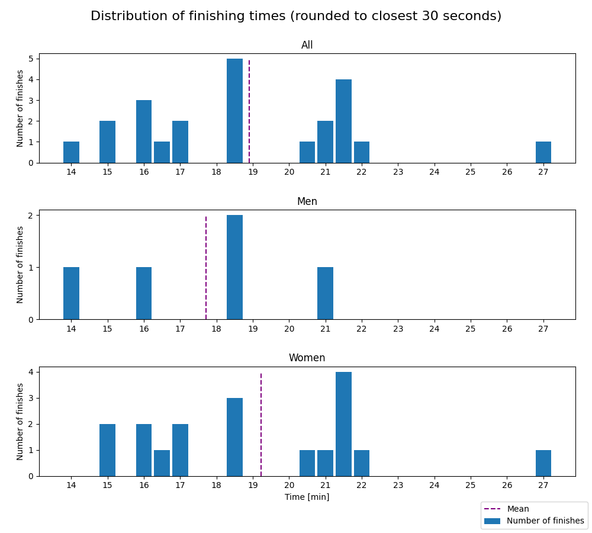
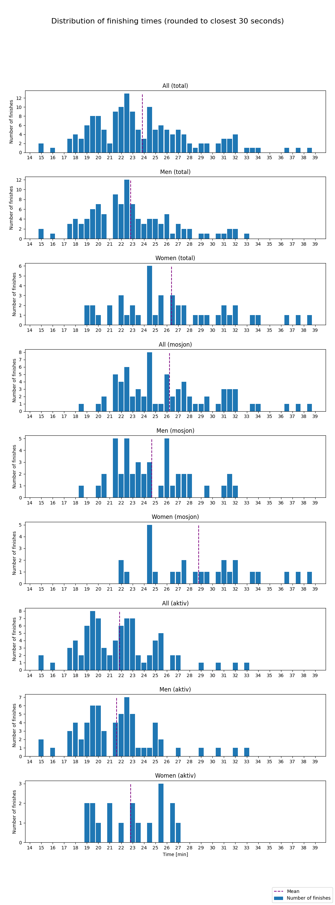

Nydalsløpet - 2021
Distances: 3 km and 5 km
3 km
- Type: Road race, partially on gravel
Statistics
Finishes better than 0:06:00 and worse than 0:35:00 are filtered out. Results faster than 0:06:00 are due to faulty data (e.g. DNFs) and results worse than 0:35:00 makes the distribution plots hard to read, as the entire distribution gets shifted left.
| Class | Fastest runner | Mean time | Median time | Finishers |
|---|---|---|---|---|
| All | 14:04 | 18:54 | 18:42 | 23 |
| Women | 15:08 | 19:14 | 18:38 | 18 |
| Men | 14:04 | 17:42 | 18:43 | 5 |
Distribution

5 km
- Type: Road race, partially on gravel
- Elevation gain: 55 m
Statistics
Finishes better than 0:14:00 and worse than 0:40:00 are filtered out. Results faster than 0:14:00 are due to faulty data (e.g. DNFs) and results worse than 0:40:00 makes the distribution plots hard to read, as the entire distribution gets shifted left.
| Class | Fastest runner | Mean time | Median time | Finishers |
|---|---|---|---|---|
| All classes | 15:11 | 23:52 | 23:00 | 155 |
| All classes - Women | 18:46 | 26:24 | 25:23 | 45 |
| All classes - Men | 15:11 | 22:49 | 22:24 | 110 |
| Mosjon | 18:38 | 26:14 | 25:31 | 71 |
| Mosjon - Women | 21:58 | 28:47 | 28:15 | 27 |
| Mosjon Men | 18:38 | 24:40 | 23:54 | 44 |
| Aktiv | 15:10 | 21:51 | 21:46 | 84 |
| Aktiv - Women | 18:46 | 22:50 | 23:01 | 18 |
| Aktiv - Men | 15:11 | 21:35 | 21:34 | 66 |
Distribution
